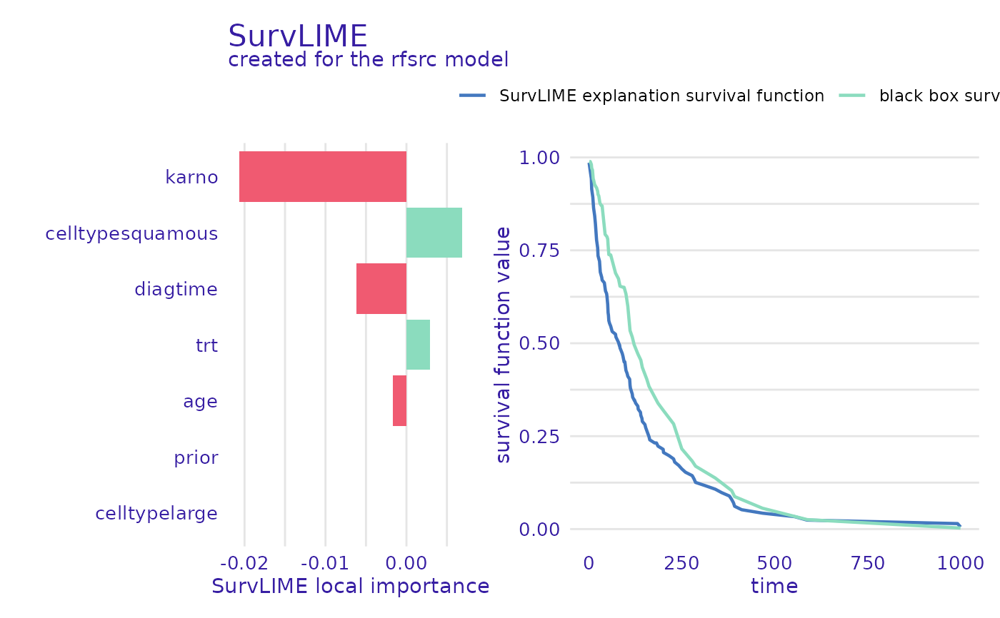
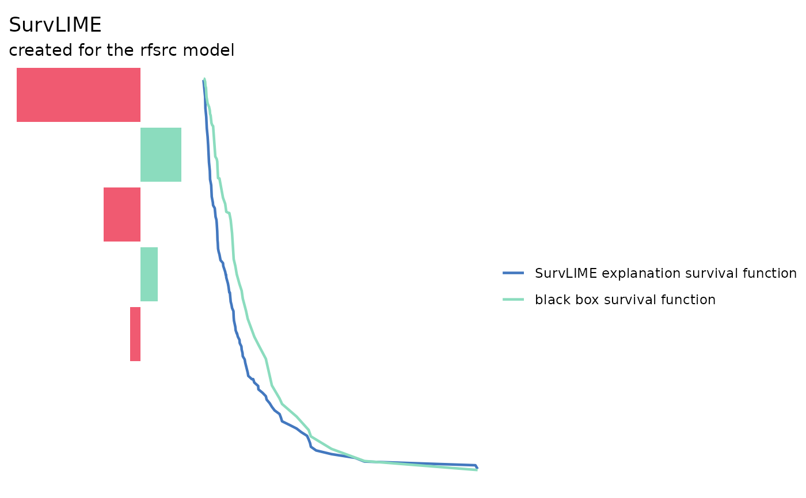

Default Theme for survex plots
set_theme_survex(
default_theme = "drwhy",
default_theme_vertical = default_theme
)
theme_default_survex()
theme_vertical_default_survex()object - string ("drwhy" or "ema") or an object of ggplot theme class. Will be applied by default by survex to all horizontal plots
object - string ("drwhy" or "ema") or an object of ggplot theme class. Will be applied by default by survex to all vertical plots
list with current default themes
old <- set_theme_survex("ema")
# \donttest{
library(survival)
library(survex)
model <- randomForestSRC::rfsrc(Surv(time, status) ~ ., data = veteran)
exp <- explain(model)
#> Preparation of a new explainer is initiated
#> -> model label : rfsrc ( default )
#> -> data : 137 rows 6 cols ( extracted from the model )
#> -> target variable : 137 values ( 128 events and 9 censored , censoring rate = 0.066 ) ( extracted from the model )
#> -> times : 50 unique time points , min = 1.5 , median survival time = 80 , max = 999
#> -> times : ( generated from y as uniformly distributed survival quantiles based on Kaplan-Meier estimator )
#> -> predict function : sum over the predict_cumulative_hazard_function will be used ( default )
#> -> predict survival function : stepfun based on predict.rfsrc()$survival will be used ( default )
#> -> predict cumulative hazard function : stepfun based on predict.rfsrc()$chf will be used ( default )
#> -> model_info : package randomForestSRC , ver. 3.2.2 , task survival ( default )
#> A new explainer has been created!
p_parts_lime <- predict_parts(exp, veteran[1, -c(3, 4)], type = "survlime")
old <- set_theme_survex("drwhy")
plot(p_parts_lime)

old <- set_theme_survex(ggplot2::theme_void(), ggplot2::theme_void())
plot(p_parts_lime)

# }